Pour les porteurs de projet, les commerçants et les PME accompagnés par le centre de gestion agréé : découvrir les offres, demander une création d'entreprise, régler, puis suivre ses pièces, ses échéances et ses honoraires depuis son espace.
CGA Broad Range Consulting Group · Douala, CamerounVersion 1.0 · 19 octobre 2026
Bienvenue. Ce guide vous accompagne pas à pas sur les deux portes d'entrée en ligne du cabinet CGA Broad Range Consulting Group, centre de gestion agréé installé à Douala.
Deux portes, un seul cabinet
La porte
Pour qui, et pour quoi faire
Le site public
Ouvert à tous, sans compte. Vous y découvrez les services et les prix, vous estimez le coût d'une création, vous déposez une demande, vous acceptez et réglez une proposition, vous suivez votre dossier par un lien personnel, et vous contactez le cabinet.
L'espace client
Réservé aux clients, avec une adresse électronique et un mot de passe. On y entre par le bouton Espace client en haut du site. Selon votre situation, il s'ouvre sur Ma création (société en cours de création) ou sur l'espace adhérent (entreprise suivie par le cabinet).
Ce dont vous avez besoin
Un téléphone ou un ordinateur avec un navigateur récent (Chrome, Firefox, Safari, Edge). Le site et l'espace client s'adaptent à l'écran d'un téléphone : les captures marquées « téléphone » le montrent.
Un numéro de téléphone où le cabinet peut vous joindre, idéalement avec WhatsApp.
Une adresse électronique : c'est là que vous recevez votre proposition, votre lien de suivi et le lien pour choisir votre mot de passe.
Pour régler en ligne : un compte mobile money. Vous pouvez toujours régler au guichet du cabinet à la place.
Comment lire ce guide
Chaque chapitre suit le même plan :
À quoi ça sertLes étapes, numérotéesUne capture de l'écran réelEt ensuite ?
Les captures ont été prises sur la plateforme de démonstration du cabinet, le 19 octobre 2026. Les noms (par exemple « EXEMPLE Awa », « EXEMPLE BOUTIQUE SARL » ou « SARL BATIMENT PLUS ») et les montants sont fictifs. Sur votre écran, vous verrez vos propres informations.
Votre sécurité. Le cabinet ne vous demandera jamais votre mot de passe, ni par téléphone, ni par WhatsApp, ni par courriel. Un lien d'accès ne vous parvient qu'à l'adresse que le cabinet connaît.
Partie 1
Le site public
Tout ce que vous pouvez faire sans compte : vous informer, estimer, demander, accepter, régler et suivre. La plupart des démarches tiennent en quelques minutes, depuis votre téléphone.
1
Découvrir le site
À quoi ça sert
La page d'accueil résume ce que fait le cabinet : création d'entreprise, tenue des comptes et des déclarations, paie, prestations ponctuelles, domiciliation, formations. Elle vous permet aussi de demander à être rappelé en deux champs.
Ouvrez le site du cabinet. En haut, le bandeau donne les numéros de téléphone, l'adresse contact@cga-brcgroup.com et l'agrément du ministère des Finances.
Le menu donne accès à Nos services, Devenir adhérent, Formations, Le CGA, Blog, Estimation et Contactez-nous. Le sélecteur FR / EN change la langue ; le bouton en forme de lune passe en affichage sombre.
Pour être rappelé tout de suite, utilisez l'encadré Lancer une démarche : choisissez votre démarche, indiquez votre nom et votre téléphone (ou WhatsApp), puis cliquez sur Être rappelé.
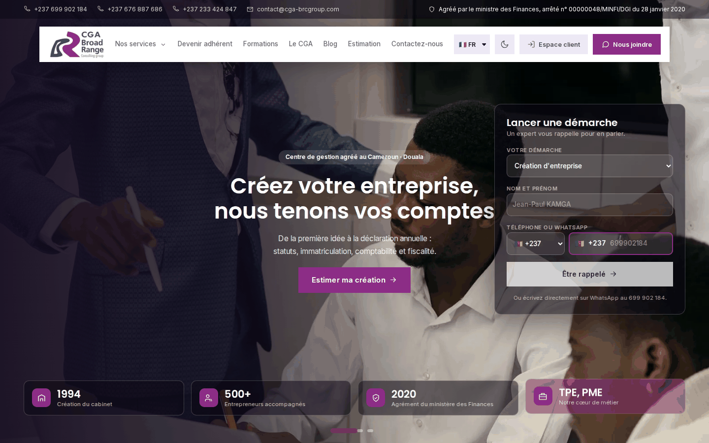
L'accueil. Le menu en haut, l'encadré « Lancer une démarche » à droite, les repères du cabinet en bas.
En descendant, vous trouvez les services avec leur prix de départ (« dès 165 000 FCFA » pour une création, « dès 12 500 FCFA par mois » pour l'adhésion et le suivi comptable, etc.), ce que l'adhésion à un centre agréé change pour vous, et les trois étapes d'une démarche.
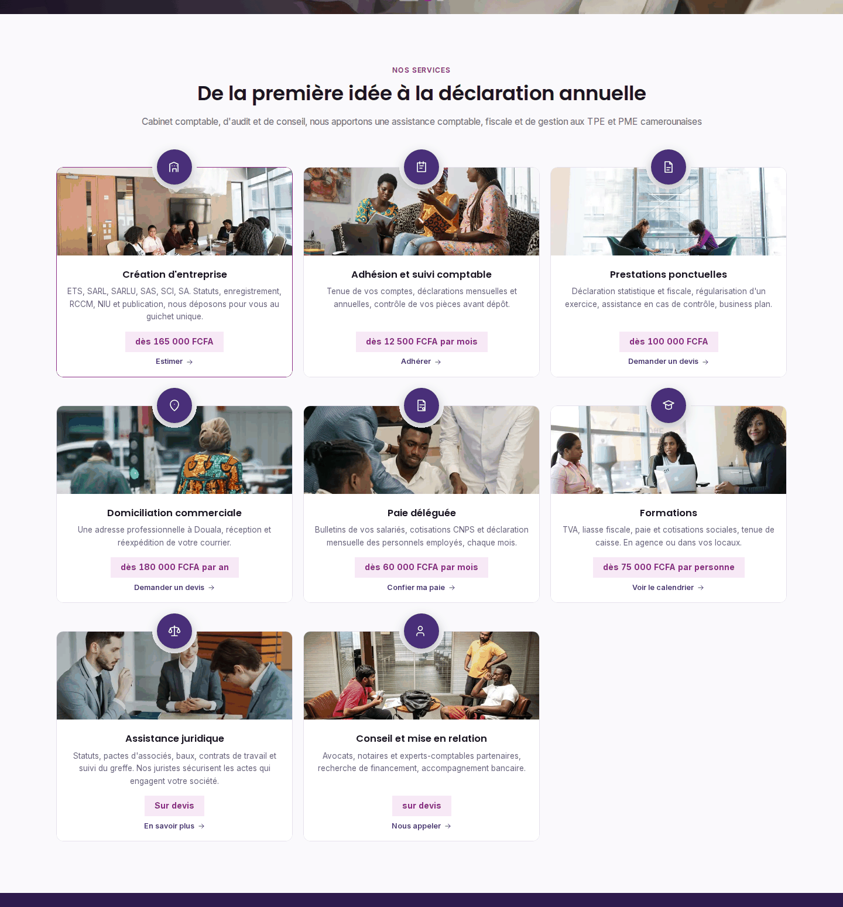
Les services. Chaque carte donne un prix de départ et un bouton (Estimer, Adhérer, Demander un devis...).
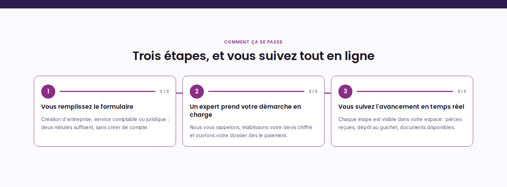
Comment ça se passe. Vous remplissez le formulaire, un expert prend votre démarche en charge, vous suivez l'avancement en ligne.
Sur téléphone
Sur un téléphone, le menu se replie derrière le bouton à trois traits, en haut à droite. Touchez-le pour l'ouvrir ; le bouton Espace client et le numéro du standard sont en bas du menu.
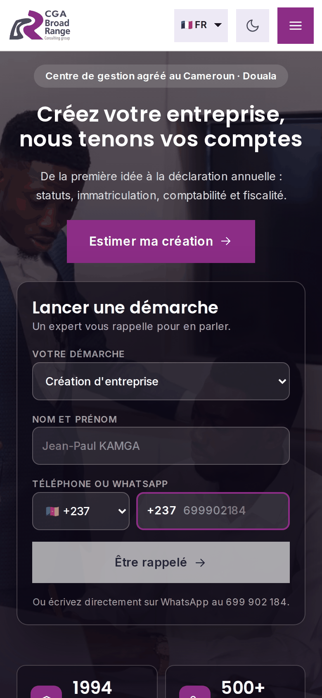
Téléphone. L'accueil.
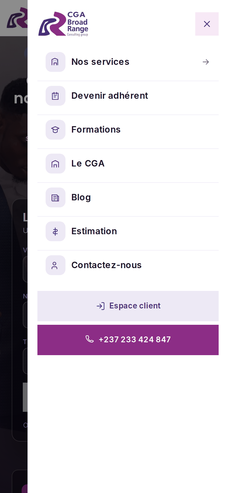
Téléphone. Le menu ouvert.
Et ensuite ? Si vous avez demandé à être rappelé, un responsable du cabinet vous appelle au numéro indiqué. Vous pouvez aussi écrire directement sur WhatsApp au 699 902 184.
2
Les offres et les tarifs
À quoi ça sert
Comparer les formules avant d'appeler. Les prix sont affichés sur le site : vous savez à quoi vous attendre.
Créer son entreprise
Menu Nos services, puis Créer mon entreprise (ou l'un des liens « Créer une SARL », « Créer une SAS »... en bas de page). La page présente la prestation (statuts, enregistrement, RCCM, NIU, publication, dépôt au guichet unique), la liste des pièces à prévoir, deux exemples de proformas à télécharger en PDF et les questions fréquentes.
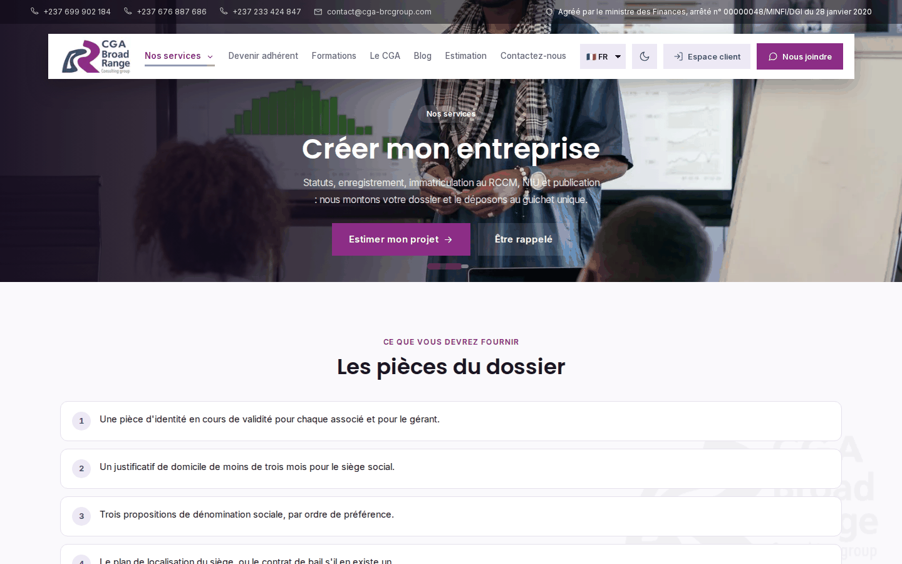
Créer mon entreprise. Les boutons « Estimer mon projet » et « Être rappelé » sont en tête de page.
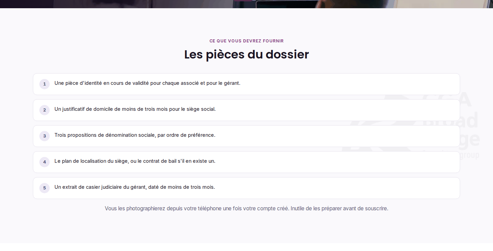
Les pièces du dossier. Inutile de les préparer avant de souscrire : vous les photographierez depuis votre téléphone une fois votre dossier ouvert (chapitre 11).
Devenir adhérent
Menu Devenir adhérent. La page explique les avantages de l'adhésion à un centre de gestion agréé (abattement de 50 % sur le bénéfice déclaré, exonération de patente deux ans, contrôle de vos pièces avant dépôt), puis présente les formules :
Formule
Pour qui
Prix affiché
Impôt libératoire
Chiffre d'affaires jusqu'à 50 millions FCFA
12 500 FCFA par mois
Réel simplifié (« le plus choisi »)
Chiffre d'affaires de 50 à 100 millions FCFA
35 000 FCFA par mois
Régime du réel
Au-delà de 100 millions FCFA, hors régime du centre agréé
Sur devis, selon le volume de pièces
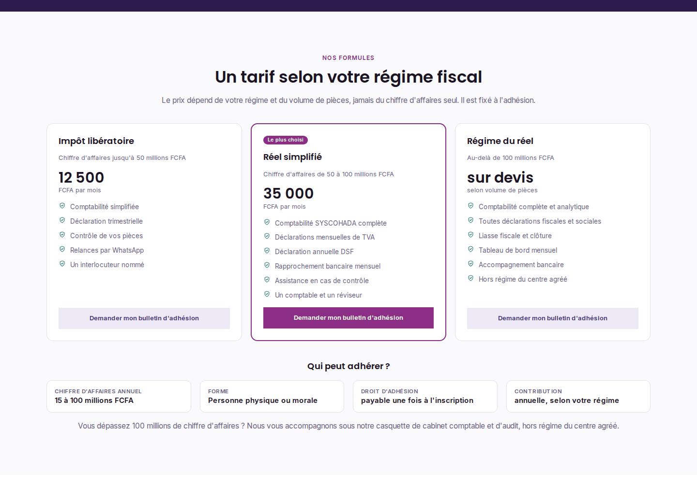
Les formules d'adhésion. Chaque carte dit ce qu'elle comprend ; le bouton « Demander mon bulletin d'adhésion » ouvre le formulaire de demande.
Et ensuite ? Pour une création, passez à l'estimation (chapitre 3) ou déposez directement votre demande (chapitre 4). Pour une adhésion, demandez votre bulletin ou souscrivez en ligne (chapitre 7).
3
Estimer le coût de sa création
À quoi ça sert
L'estimateur calcule en direct ce que coûtera votre création, en séparant les frais officiels (avancés par le cabinet) de ses honoraires. Rien n'est enregistré : vous pouvez essayer autant que vous voulez.
Cliquez sur Estimation dans le menu (ou « Estimer ma création » sur l'accueil).
Choisissez la forme juridique (Établissement, SARL unipersonnelle, SARL, SAS, SCI, Société anonyme).
Indiquez le capital social (minimum légal 100 000 FCFA), le nombre d'associés et la ville d'immatriculation.
Cochez si vous le souhaitez les options « Suivi comptable et fiscal, 12 mois » et « Domiciliation commerciale, 12 mois ».
Le cadre Votre estimation se met à jour à chaque changement : frais officiels, honoraires, total à régler et délai annoncé.
Choisissez ensuite : Souscrire en ligne, Télécharger le devis (PDF) ou Recevoir ce devis par WhatsApp.
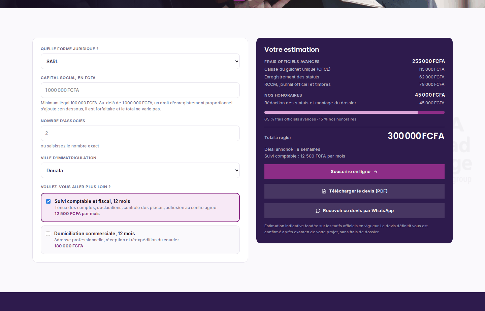
L'estimateur. Les questions à gauche, le détail et le total à droite.
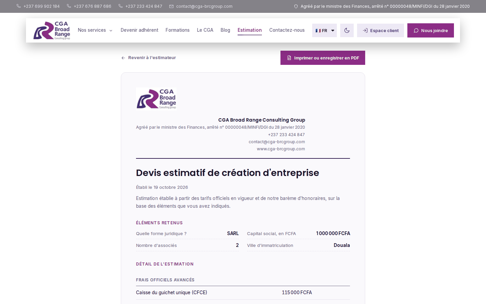
Le devis estimatif. Le bouton « Imprimer ou enregistrer en PDF » le garde sur votre téléphone ou votre ordinateur.
Bon à savoir. Il s'agit d'une estimation fondée sur les tarifs officiels en vigueur, pas d'une facture. Le devis définitif vous est confirmé après examen de votre projet, sans frais de dossier.
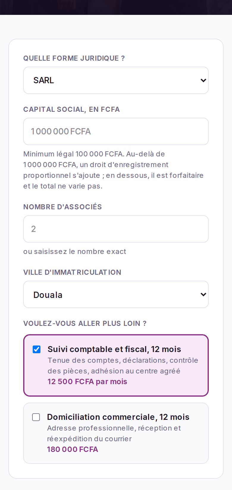
Téléphone. L'estimateur se remplit aussi au doigt.
4
Demander la création de son entreprise
À quoi ça sert
Confier votre projet au cabinet. Il vous suffit de votre nom et de votre téléphone ; tout le reste est facultatif. Ce que vous ajoutez ne vous sera pas redemandé au téléphone : votre dossier s'ouvre déjà rempli.
Sur la page Créer mon entreprise, descendez jusqu'au formulaire Demander ce service. Le service est déjà rempli.
Indiquez votre nom et prénom et votre téléphone. L'adresse électronique est facultative, mais recommandée : c'est là que vous recevrez votre proposition et votre lien de suivi.
Si vous le souhaitez, répondez aux questions de Votre projet, en quelques réponses : forme de société, nom souhaité, nombre d'associés, capital envisagé, apports en nature, chiffre d'affaires visé, salariés prévus, région et adresse du siège, activité, statuts déjà rédigés, pièces déjà réunies. Si vous hésitez, laissez vide.
Cochez J'accepte que le cabinet utilise ces informations pour traiter ma demande. La case WhatsApp est facultative.
Cliquez sur Envoyer ma demande (ou sur Envoyer sur WhatsApp si vous préférez ce canal).
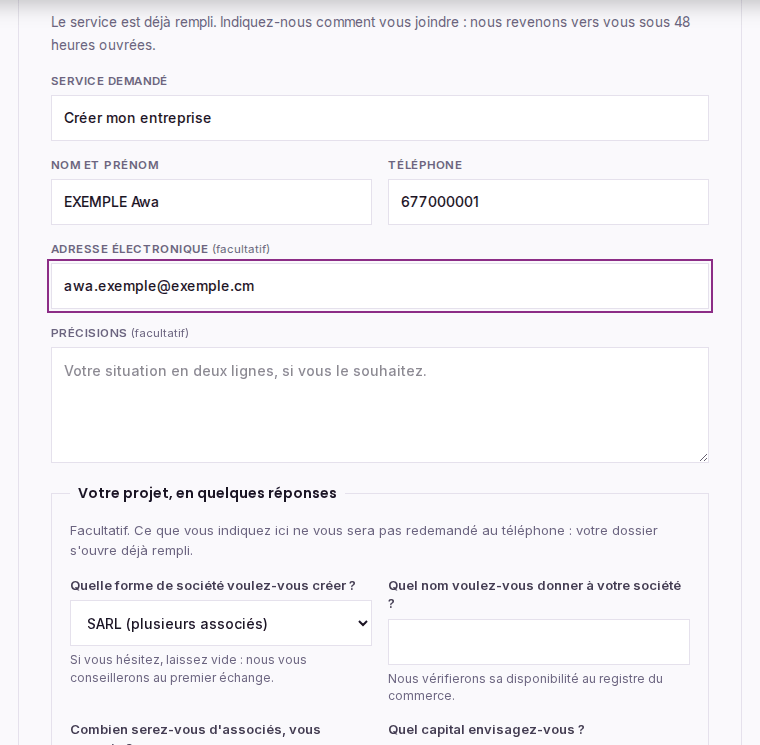
Vos coordonnées. Seuls le nom et le téléphone sont obligatoires.
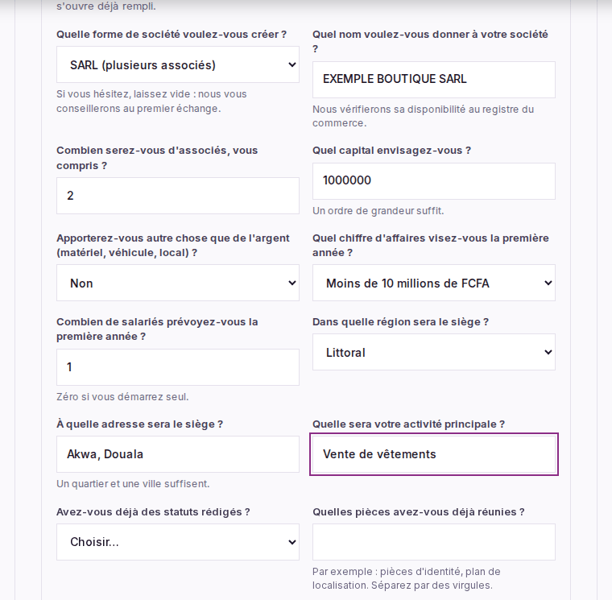
Votre projet. Douze questions, toutes facultatives.
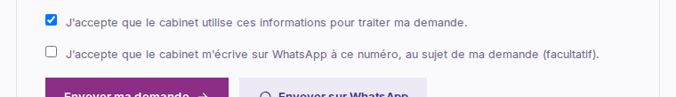
Le consentement et l'envoi.
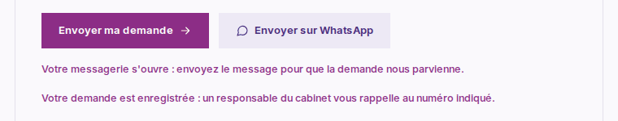
La confirmation. « Votre demande est enregistrée : un responsable du cabinet vous rappelle au numéro indiqué. »
Pourquoi votre messagerie s'ouvre-t-elle ? En même temps que la demande est enregistrée, le site prépare un courriel avec votre demande et ouvre votre messagerie. C'est une copie de sécurité : vous pouvez l'envoyer, mais votre demande est déjà arrivée au cabinet dès que le message « Votre demande est enregistrée » s'affiche.
Et ensuite ? Vous recevez un accusé de réception par courriel. La demande est confiée automatiquement à un responsable du cabinet, qui vous appelle sous 48 heures ouvrées pour faire le point. Il vous envoie ensuite votre proposition chiffrée par courriel (chapitre 5).
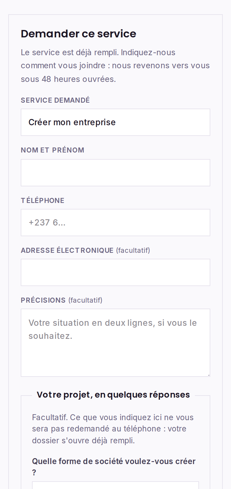
Téléphone. Le même formulaire, sur un écran de 390 points.
5
Accepter sa proposition et la régler
À quoi ça sert
Après votre échange avec le cabinet, vous recevez par courriel un lien vers votre proposition (proforma). Vous y lisez le prix ligne par ligne, vous donnez votre accord, puis vous réglez : par mobile money ou au guichet du cabinet.
Ouvrez le lien reçu par courriel (objet « Votre proposition... »). Aucun compte n'est nécessaire. Le lien a une date de validité, indiquée en haut de la page.
Lisez Ce qui compose le prix : les rubriques (procédure au CFCE, aux impôts, à la CNPS, suivi, DSF...) avec leurs sous-totaux. Le bouton Lire la proforma détaillée ouvre le document complet.
Pour accepter, saisissez votre nom et votre qualité (par exemple « EXEMPLE Awa, gérante »), cochez J'accepte cette proposition au montant indiqué, puis cliquez sur J'accepte la proposition.
La page affiche alors comment régler :
Par mobile money : le bouton « Payer ... FCFA par mobile money » envoie une demande de paiement sur votre téléphone ; vous la validez avec votre code secret. La page se met à jour toute seule.
Au cabinet, en espèces ou par virement : les coordonnées figurent sur la proforma détaillée. La responsable de caisse constate votre règlement et la page se met à jour.
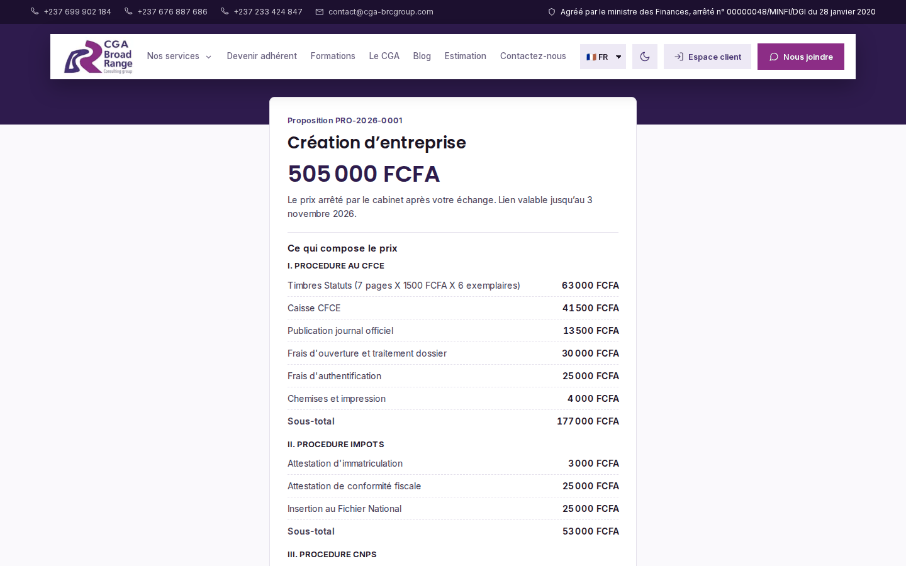
La proposition. Le montant, sa validité, puis le détail par rubrique.
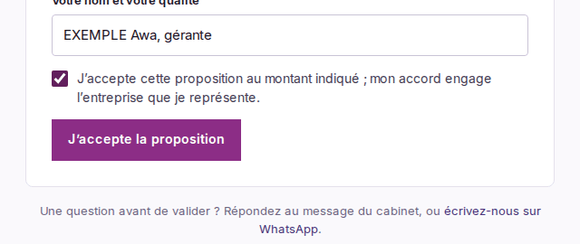
Votre accord. Votre nom, votre qualité, la case à cocher.
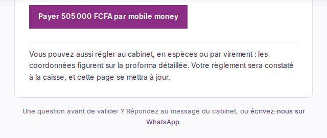
Régler. Mobile money, ou au cabinet.
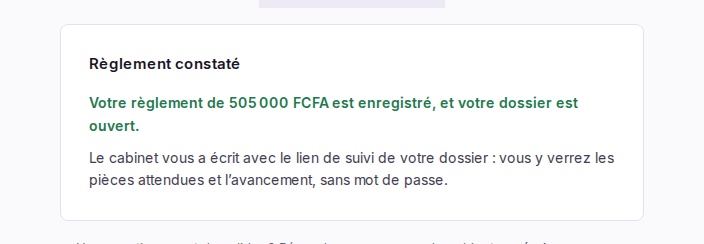
Règlement constaté. « Votre règlement de 505 000 FCFA est enregistré, et votre dossier est ouvert. »
Démonstration. Sur la plateforme de démonstration, le paiement mobile money n'est pas encore relié à un compte marchand : aucun débit réel n'est demandé. Le règlement de la capture a été constaté au guichet.
Et ensuite ? Dès que le règlement est constaté, sans autre démarche de votre part : votre dossier de création s'ouvre, vous recevez un courriel avec votre lien de suivi personnel (chapitre 6) et un bouton Choisir mon mot de passe pour ouvrir votre espace client (chapitre 10).
6
Suivre sa création par son lien personnel
À quoi ça sert
Voir où en est votre création et envoyer vos pièces, sans mot de passe. Le lien reçu par courriel à l'ouverture du dossier vaut pour toute la durée de la formalité : gardez-le.
Ouvrez le lien de suivi reçu par courriel.
La frise montre les six étapes : Règlement, Vos pièces, Statuts, Dépôt, Immatriculation, Remise. L'étape en cours est entourée.
L'encadré dit En ce moment ce que fait le cabinet, et De votre côté ce qu'il attend de vous.
Sous Vos documents, envoyez chaque pièce demandée : choisissez le fichier (photo ou PDF), puis cliquez sur Envoyer. Le compteur « x sur y documents nécessaires reçus » avance.
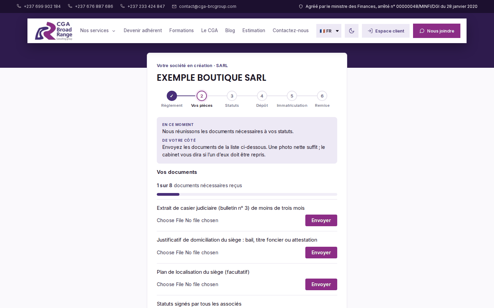
Le suivi par lien personnel. La même page que « Ma création » dans l'espace client.
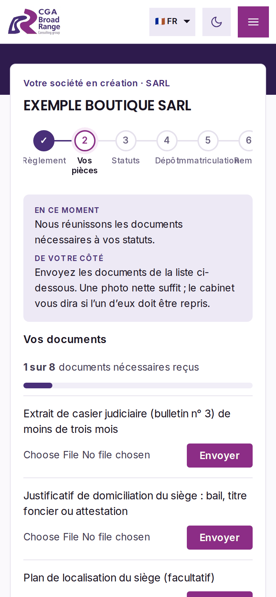
Téléphone. Le suivi, tel qu'il s'ouvre le plus souvent.
Et ensuite ? Le cabinet voit chaque pièce dès son envoi, et vous dit si l'une d'elles doit être reprise. Le jour où votre société est immatriculée et que vous prenez le suivi, l'espace adhérent s'ajoute à votre compte, sans en créer un second.
7
Souscrire une offre en ligne
À quoi ça sert
Établir vous-même un devis au barème du jour, valable trente jours, pour une entreprise qui existe déjà : suivi comptable et fiscal avec adhésion au centre agréé, paie déléguée, domiciliation commerciale ou formation. La création d'entreprise et les prestations ponctuelles se font sur étude (chapitres 4 et 9). La DSF de l'exercice, pour une entreprise qui n'est pas adhérente, s'y commande aussi dès que le cabinet en a arrêté le prix ; d'ici là, son devis indique que le cabinet vous confirme le montant avant tout règlement.
Ouvrez Souscrire en ligne (bouton de la page « Devenir adhérent » ou de l'estimateur).
Sous Votre devis, choisissez le service et la formule (par exemple « Selon mon chiffre d'affaires »).
Renseignez prénom, nom, adresse électronique, téléphone mobile money, dénomination de l'entreprise, NIU et chiffre d'affaires annuel.
Cliquez sur Établir mon devis.
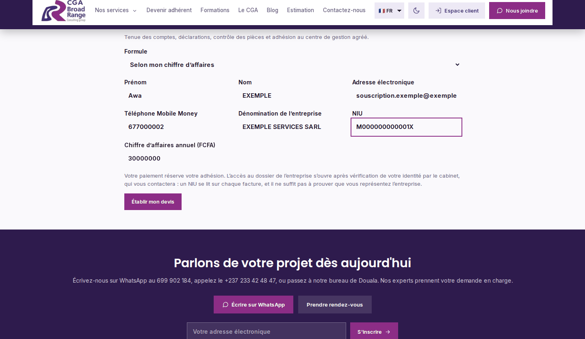
Le formulaire de souscription.
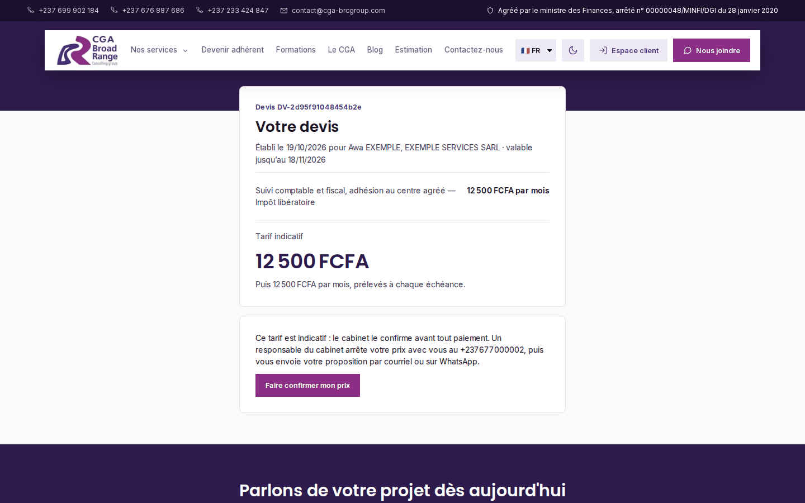
Votre devis. Sa référence, sa date de validité, chaque ligne et le montant.
Tarif indicatif : le cabinet confirme avant tout paiement. Tant que le cabinet n'a pas arrêté votre prix, le devis affiche « Tarif indicatif » et propose Faire confirmer mon prix au lieu du paiement. Un responsable vous appelle, arrête le prix avec vous, puis vous envoie votre proposition par courriel ou WhatsApp. Une fois le prix arrêté, le même devis propose le paiement par mobile money.
Et ensuite ? Votre paiement réserve votre adhésion. L'accès au dossier de l'entreprise s'ouvre après vérification de votre identité par le cabinet, qui vous contacte : un NIU figure sur chaque facture, il ne suffit donc pas à prouver que vous représentez l'entreprise. Vous recevez alors le lien pour choisir votre mot de passe.
8
Le blog et les formations
À quoi ça sert
Comprendre ce qui change en fiscalité et en gestion, et vous former avec le cabinet.
Cliquez sur Blog. Les articles sont classés par thème ; touchez un thème pour filtrer.
Cliquez sur un article pour le lire. Sa date de publication est indiquée ; les boutons de partage (Facebook, WhatsApp, copier le lien) sont en tête d'article.
Cliquez sur Formations pour voir le calendrier des prochaines sessions (TVA, liasse fiscale, paie et cotisations sociales...), leur lieu, leur durée et leur programme.
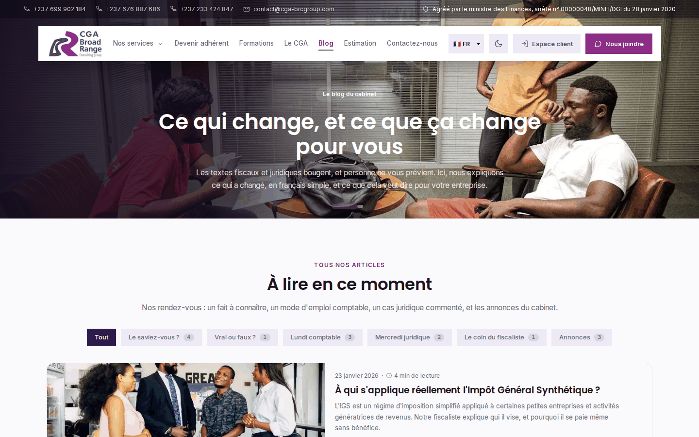
Le blog.
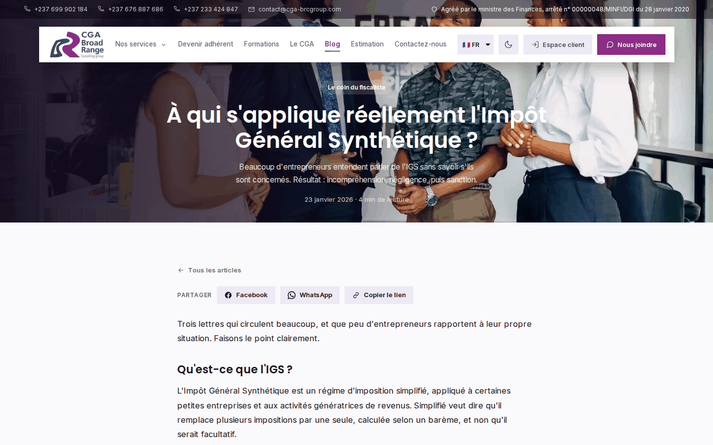
Un article.
Les formations. Le calendrier des sessions, en agence ou dans vos locaux.
Et ensuite ? Pour vous inscrire à une formation, utilisez le formulaire de contact en choisissant « Formation », ou appelez le cabinet. Pour recevoir les nouveautés, inscrivez votre adresse dans le champ S'inscrire en bas de chaque page.
9
Contacter le cabinet
À quoi ça sert
Poser une question, demander une prestation ponctuelle (DSF, régularisation, assistance en cas de contrôle, business plan), une domiciliation ou une formation.
Cliquez sur Contactez-nous. Trois façons de joindre le cabinet s'affichent : WhatsApp, téléphone, courriel.
Pour laisser une trace écrite, remplissez le formulaire Dites-nous ce dont vous avez besoin : objet de la demande, nom et prénom, téléphone ou WhatsApp, adresse électronique (facultative), votre message.
Cochez l'accord sur l'utilisation de vos informations, puis cliquez sur Envoyer ma demande.
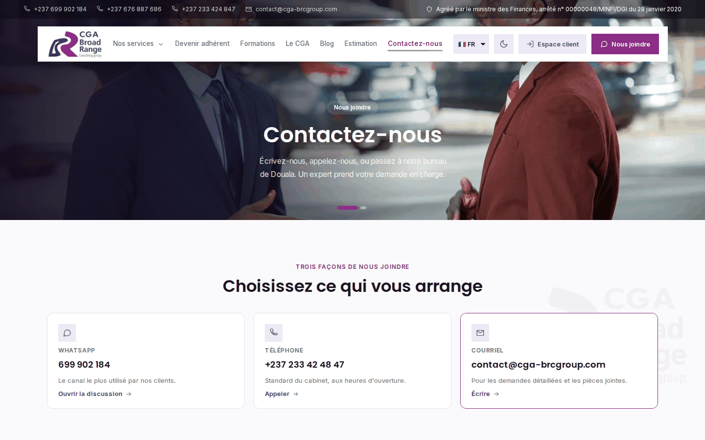
Les trois façons de nous joindre.
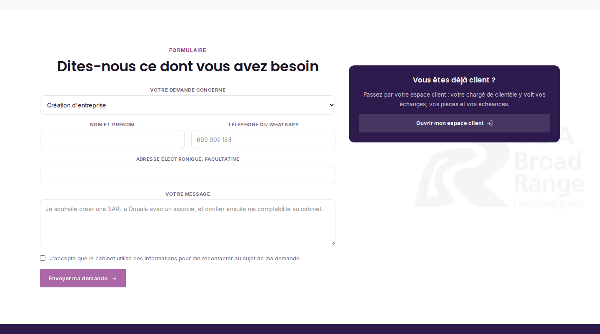
Le formulaire de contact. À droite, « Vous êtes déjà client ? » mène à votre espace client.
Et ensuite ? Un responsable vous recontacte au numéro indiqué. Si vous êtes déjà client, passez plutôt par votre espace : votre chargé de clientèle y voit vos échanges, vos pièces et vos échéances.
Joindre un document à votre demande
Une fois la demande enregistrée, un encadré Joindre un document, si vous le souhaitez apparaît sous le formulaire. Un bail, des statuts, une facture : le cabinet le lira avant de vous rappeler.
Choisissez le fichier : un PDF ou une photo, 10 Mo au plus.
Cliquez sur Joindre. La ligne « … est jointe à votre demande » confirme l'envoi.
Recommencez pour un autre document : cinq au maximum, pendant les sept jours qui suivent la demande.
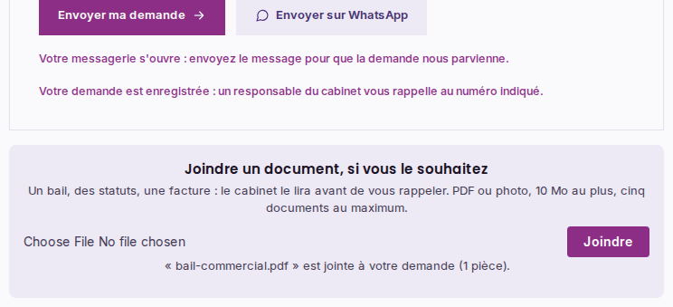
Le document joint. Tout est facultatif : la demande est déjà enregistrée.
Suivre votre prestation : la page « Ma demande »
Pour une prestation ponctuelle (analyse ou rédaction d'un contrat, par exemple), le cabinet vous écrit quand un juriste prend votre demande en charge. Le bouton Suivre ma demande du courriel ouvre une page à votre nom, sans mot de passe :
les trois étapes : Prise en charge, Relecture (un second juriste relit), Livrée ;
une fois le travail validé, le bouton Ouvrir mon livrable (PDF). Le courriel « Votre livrable est prêt » mène à la même page.
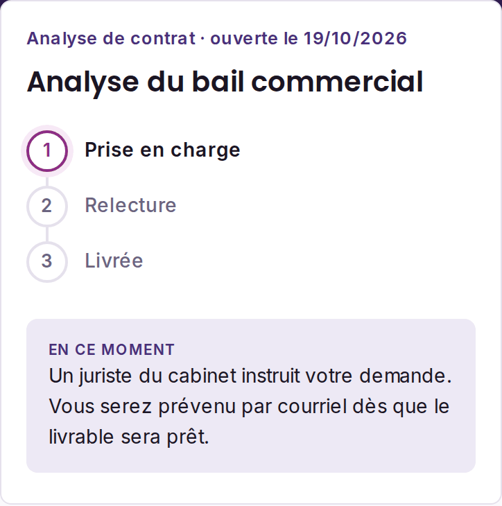
En cours : un juriste instruit votre demande.
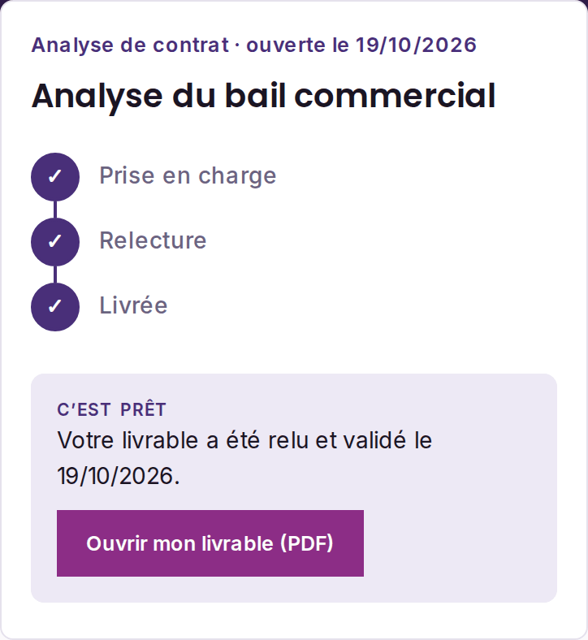
Livrée : relue, validée, prête à ouvrir.
Ce lien vous est personnel. Ne le transférez pas : il ouvre votre demande et son livrable.
Partie 2
L'espace client
Votre espace personnel, avec mot de passe. Il s'ouvre sur « Ma création » tant que votre société est en cours de création, puis sur l'espace adhérent quand le cabinet suit votre entreprise : pièces, échéances, honoraires, documents, DSF, paie.
10
Choisir son mot de passe et se connecter
À quoi ça sert
Ouvrir votre espace la première fois, puis vous y reconnecter. Votre compte est créé par le cabinet (à votre règlement, ou à votre adhésion) : vous n'avez pas à vous inscrire.
La première fois : choisir son mot de passe
Ouvrez le courriel du cabinet et cliquez sur Choisir mon mot de passe.
Saisissez votre nouveau mot de passe, puis répétez-le dans Confirmer.
Cliquez sur Créer mon espace. Vous arrivez sur la page de connexion.
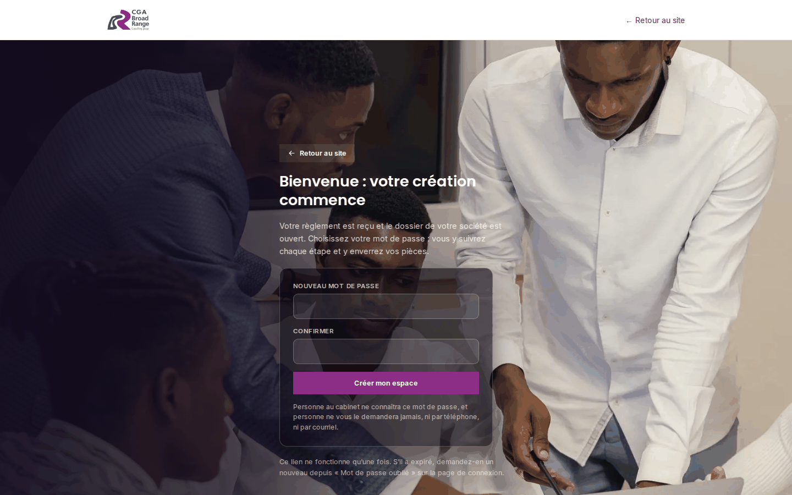
Choisir son mot de passe. Personne au cabinet ne connaîtra ce mot de passe. Le lien ne fonctionne qu'une fois.
Les fois suivantes : se connecter
Sur le site, cliquez sur Espace client (en haut à droite).
Saisissez votre adresse électronique et votre mot de passe, puis cliquez sur Se connecter.
Vous arrivez directement dans votre espace : « Ma création » ou l'espace adhérent, selon votre situation.
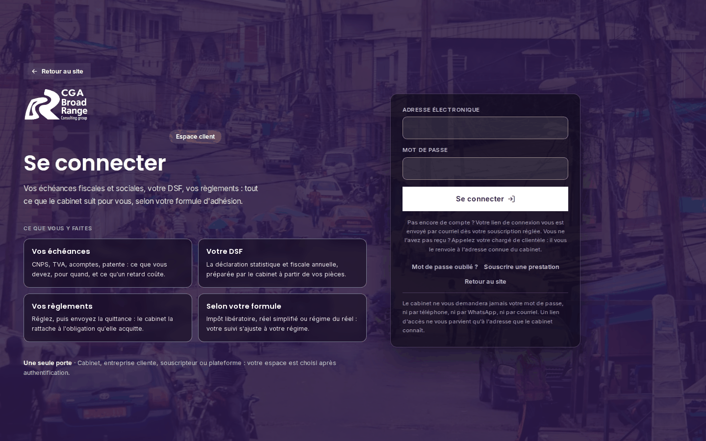
La connexion. La même porte pour tous ; votre espace est choisi après la connexion.
Mot de passe oublié
Sur la page de connexion, cliquez sur Mot de passe oublié ?
Saisissez l'adresse de votre compte, puis cliquez sur Recevoir un lien.
Ouvrez le courriel reçu et choisissez un nouveau mot de passe. Ce lien est valable deux heures.
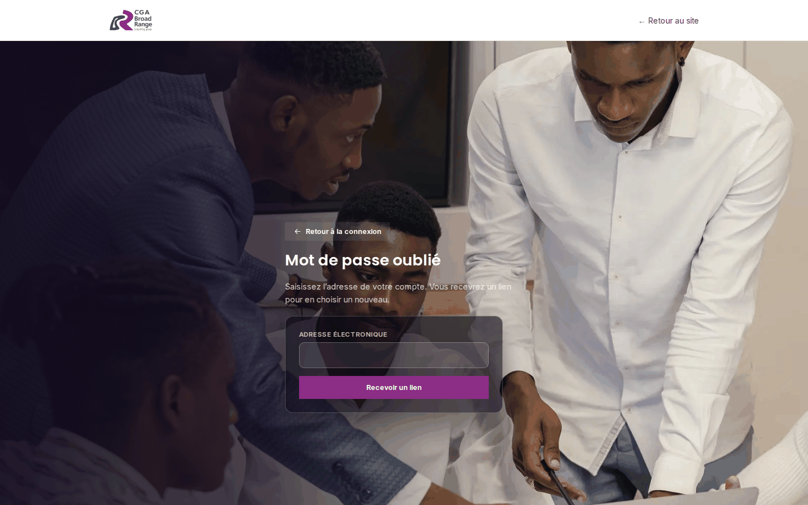
Mot de passe oublié.
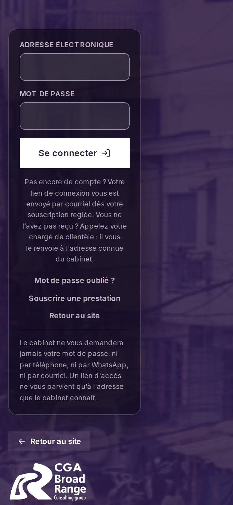
Téléphone. La connexion.
Pas reçu de lien ? Votre lien de connexion vous est envoyé par courriel dès votre souscription réglée. Si vous ne l'avez pas reçu, appelez votre chargé de clientèle : il vous le renvoie à l'adresse connue du cabinet. Pour vous déconnecter, utilisez le bouton Se déconnecter en haut de votre espace.
11
Ma création : suivre et envoyer ses pièces
À quoi ça sert
Tant que votre société est en cours de création, votre espace s'ouvre sur « Ma création ». Vous y voyez l'avancement et vous y envoyez les documents demandés, comme par votre lien personnel (chapitre 6).
Connectez-vous. La page « Ma création » s'ouvre avec le nom de votre future société et sa forme.
Lisez la frise des six étapes et l'encadré En ce moment / De votre côté.
Sous Vos documents, pour chaque pièce : cliquez sur le champ de fichier, choisissez une photo nette ou un PDF (sur téléphone, vous pouvez prendre la photo directement). Un aperçu s'affiche, avec un bouton Retirer si vous vous êtes trompé.
Cliquez sur Envoyer. La pièce passe dans les documents reçus et le compteur avance (« 2 sur 8 documents nécessaires reçus »). Une pièce marquée « facultatif » ne compte pas.
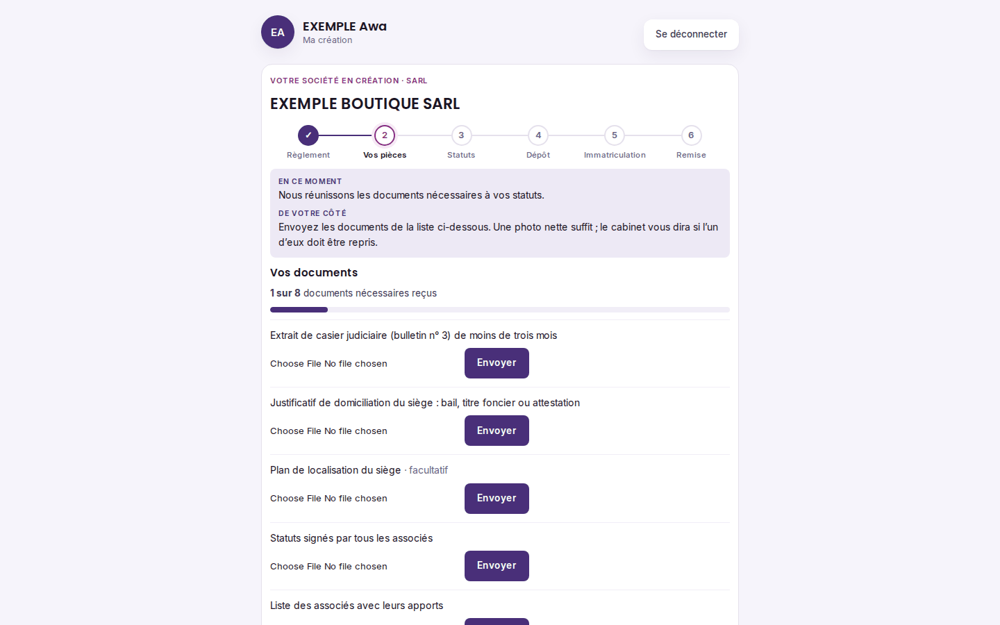
Ma création. La frise, l'encadré, puis la liste des documents à envoyer.
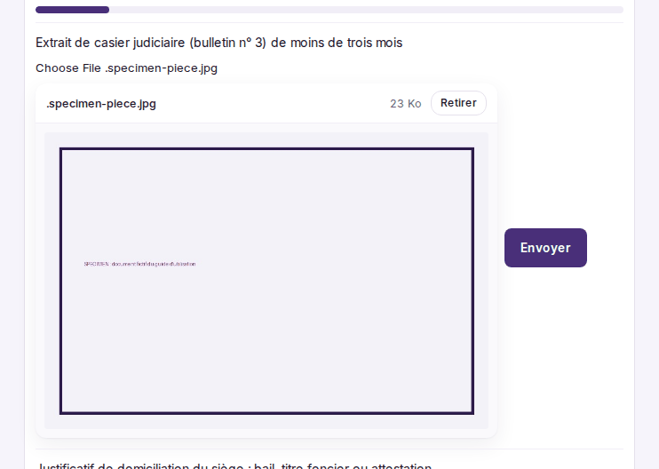
Avant l'envoi. Le fichier choisi et son aperçu.
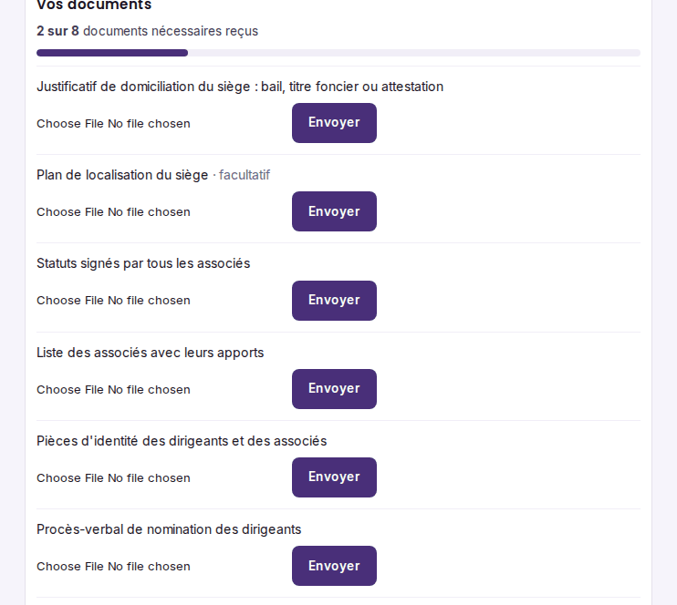
Après l'envoi. Le compteur a avancé.
Et ensuite ? La juriste du cabinet reçoit vos pièces au dossier (y compris celles que vous lui envoyez par WhatsApp, qu'elle y verse elle-même). Elle rédige les statuts, dépose le dossier, suit l'immatriculation et vous remet les documents de votre société. À l'immatriculation, l'espace adhérent s'ajoute à votre compte.
12
L'accueil de l'espace adhérent
À quoi ça sert
En un coup d'oeil : ce que le cabinet attend de vous, vos échéances, vos derniers envois, la fiche de votre entreprise.
L'accueil se lit de haut en bas :
une alerte en tête quand il manque des justificatifs (avec le bouton Envoyer un justificatif) ;
Ce qu'on attend de vous : les demandes du cabinet (chapitre 13) ;
Envoyer un justificatif (chapitre 14) ;
Votre mois : le nombre de justificatifs envoyés ; les montants s'affichent une fois le mois revu par le cabinet ;
Mes échéances (chapitre 15) et Mes derniers envois ;
la fiche de votre entreprise : NIU, régime fiscal, centre de rattachement, TVA, adhésion, exercice en cours.
En bas de l'écran, une barre d'onglets reste toujours visible : Accueil, Justificatifs, Échéances, Honoraires, Ma paie, Documents, Entreprise. Les Réglages sont en haut, à côté de Se déconnecter.
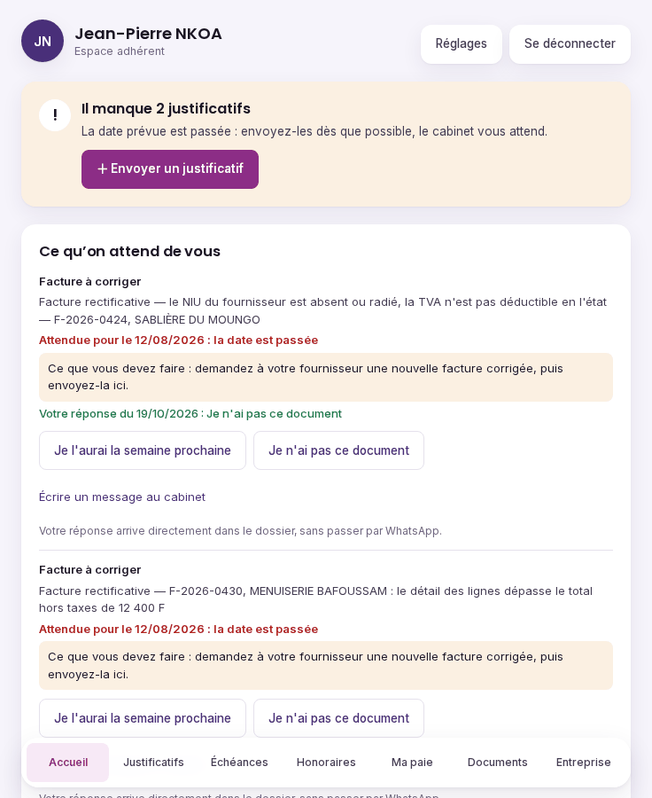
L'accueil, sur ordinateur.
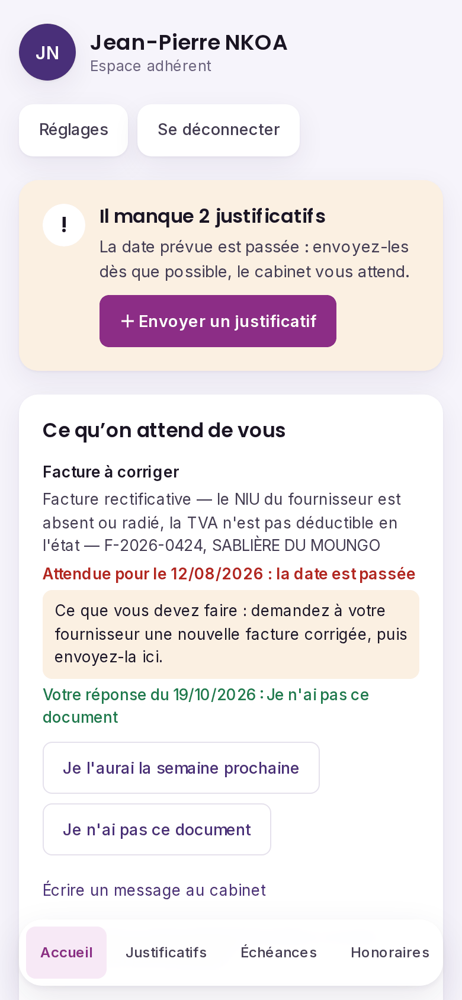
Téléphone. Sur un écran étroit, faites glisser la barre d'onglets pour voir les derniers.
13
Répondre aux demandes du cabinet
À quoi ça sert
Quand le cabinet a besoin d'une pièce (une facture à corriger, un relevé bancaire...), la demande apparaît dans Ce qu'on attend de vous, avec la date attendue et ce que vous devez faire. Vous répondez en un geste, sans passer par WhatsApp.
Lisez la demande : son objet, la date attendue (en rouge si elle est passée) et, dans l'encadré, Ce que vous devez faire.
Si vous avez la pièce, envoyez-la (chapitre 14).
Sinon, répondez par un bouton : Je l'aurai la semaine prochaine ou Je n'ai pas ce document. Votre réponse s'affiche en vert sous la demande, avec sa date.
Pour préciser quelque chose, cliquez sur Écrire un message au cabinet.
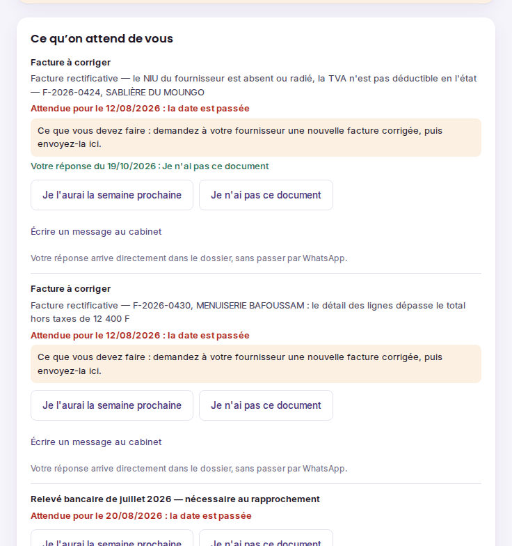
Ce qu'on attend de vous. Ici, deux factures à faire corriger par le fournisseur et un relevé bancaire.
Et ensuite ? Votre réponse arrive directement dans le dossier. La demande disparaît quand la pièce est reçue ou que le cabinet la clôt.
14
Envoyer et retrouver ses justificatifs
À quoi ça sert
Transmettre au cabinet vos factures d'achat et de vente, relevés et autres pièces, chaque mois, en photo ou en PDF. C'est ce qui permet de tenir vos comptes et de préparer vos déclarations.
Sur l'accueil, allez à Envoyer un justificatif (ou touchez le bouton de l'alerte).
Dans Le document, choisissez un fichier : photo ou PDF, 20 Mo au plus. Sur téléphone, le second champ Prendre une photo avec le téléphone ouvre directement l'appareil photo.
Si besoin, cliquez sur Préciser (facultatif) pour ajouter un mot.
Cliquez sur Envoyer au cabinet.
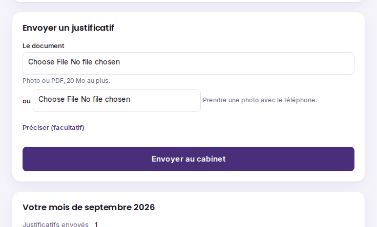
Envoyer un justificatif.
Retrouver ses envois
Mes derniers envois, sur l'accueil, montre vos dernières pièces avec leur état : REÇUE (arrivée au cabinet), LUE (lue par le cabinet, avec le fournisseur, la date et le montant). Les boutons Aperçu et Télécharger ouvrent la pièce. L'onglet Justificatifs les range mois par mois : recherchez un fournisseur, choisissez le mois et le statut (à corriger, reçu, enregistré, gardé au dossier), puis cliquez sur Afficher.
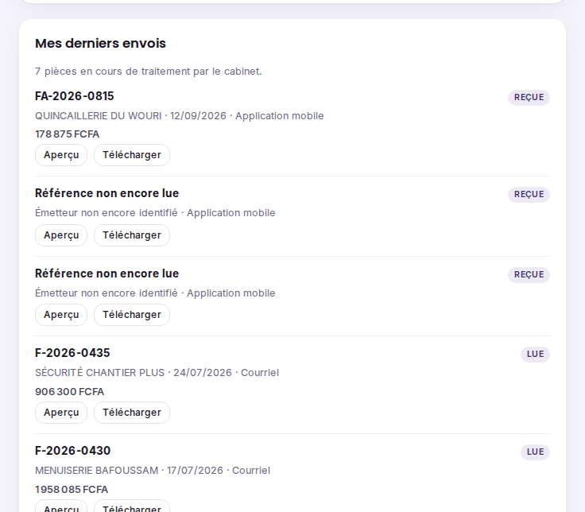
Mes derniers envois.
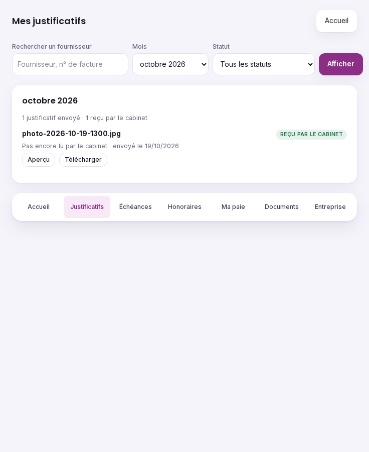
L'onglet Justificatifs.
Et ensuite ? Le cabinet lit la pièce, contrôle sa conformité et l'enregistre dans vos comptes. Si elle doit être corrigée, une demande apparaît dans « Ce qu'on attend de vous ». Les envois faits sans réseau depuis l'application mobile restent sur votre téléphone jusqu'au retour du réseau.
15
Ses échéances, TVA et CNPS : quittance ou paiement par le cabinet
À quoi ça sert
Voir ce que votre entreprise doit à l'administration (TVA, acomptes d'impôt, retenues sur salaires, cotisations CNPS...), pour quand, et ce qui est déjà déposé. Puis, quand vous avez payé, envoyer la quittance ; ou, si vous l'avez confié au cabinet, lui remettre les fonds.
Touchez l'onglet Échéances. Chaque ligne donne l'obligation, la période et son état : En retard de x jours (rouge), à venir, ou Déposée le ... avec le montant (vert).
Touchez une échéance pour ouvrir sa fiche : la situation, De quoi s'agit-il ? (une explication simple et ce qu'un retard coûte), la période précédente et la prochaine échéance.
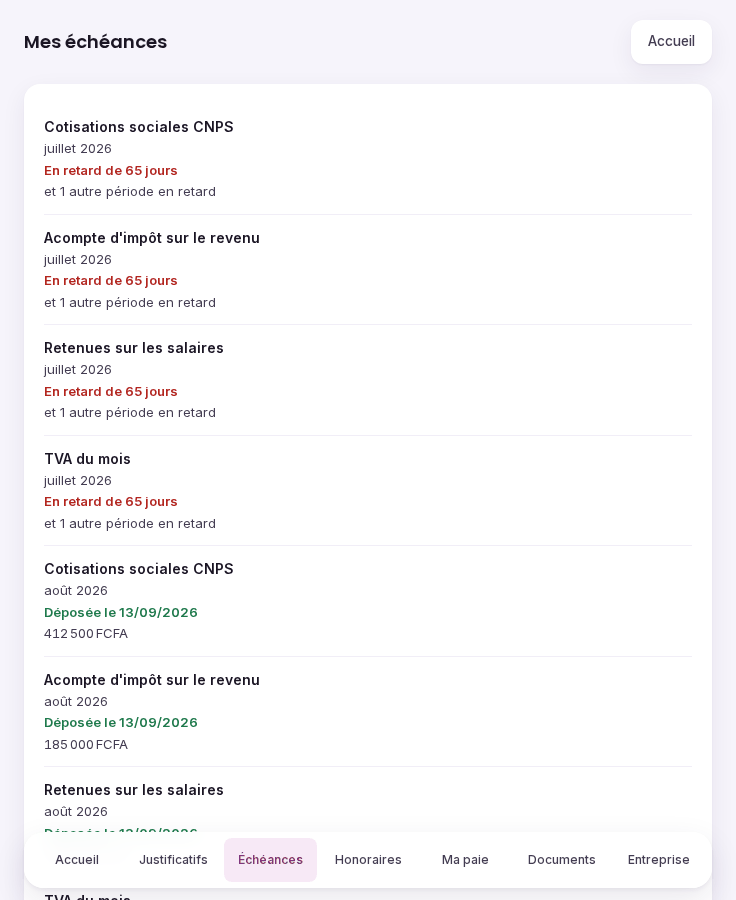
Mes échéances.
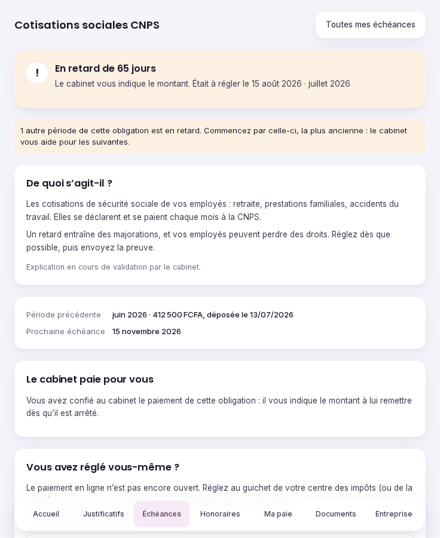
La fiche d'une échéance.
Vous payez vous-même : envoyez la quittance
Réglez au guichet de votre centre des impôts ou de la CNPS. Le paiement en ligne de l'impôt n'est pas encore ouvert dans l'espace.
Dans la fiche de l'échéance, section Vous avez réglé ? (ou « Vous avez réglé vous-même ? »), choisissez la photo ou le PDF de la quittance.
Cliquez sur J'ai déjà payé : envoyer la preuve.
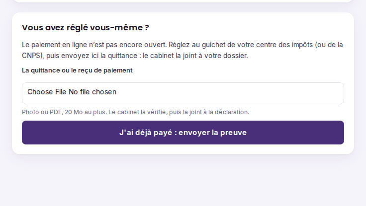
Envoyer sa quittance.
Vous avez confié le paiement au cabinet
Si vous avez signé un mandat avec le cabinet pour qu'il paie une obligation à votre place, la fiche affiche Le cabinet paie pour vous. Le cabinet arrête le montant et vous l'indique ; vous lui remettez alors les fonds, par mobile money depuis la fiche, ou au guichet du cabinet. Ces fonds sont suivis à part de vos honoraires. Le cabinet paie l'administration dès réception.
Et ensuite ? Le cabinet vérifie la quittance. Validée, l'échéance passe à Payée : quittance vérifiée par le cabinet. Refusée, la fiche affiche le motif (« Quittance refusée : ... ») et vous pouvez en envoyer une autre. Sous mandat, vous lisez d'abord « Fonds reçus par le cabinet », puis « Payée » quand le cabinet a porté la quittance de l'administration. Vous êtes prévenu par courriel à chaque étape.
16
Régler ses honoraires
À quoi ça sert
Voir ce que vous devez au cabinet selon votre contrat, télécharger vos notes d'honoraires et vos reçus, et régler par mobile money ou au guichet.
Touchez l'onglet Honoraires. En tête, le rappel de votre contrat (par exemple « 45 000 FCFA par mois, payables en début de période ») et le montant À régler aujourd'hui, dont les périodes en retard. Un bandeau prévient si le traitement du dossier risque d'être suspendu faute de règlement.
Sous À régler, chaque période indique son montant, son état (En retard, À régler) et sa Note d'honoraires (PDF).
Pour régler par mobile money, cliquez sur Payer ... FCFA par mobile money, vérifiez le numéro mobile money à débiter, puis cliquez sur Recevoir la demande de ... FCFA. Validez la demande sur votre téléphone avec votre code ; la page se met à jour toute seule.
Vous pouvez aussi régler au cabinet, en espèces ou par virement : la responsable de caisse le constate et la ligne passe à « Réglée ».
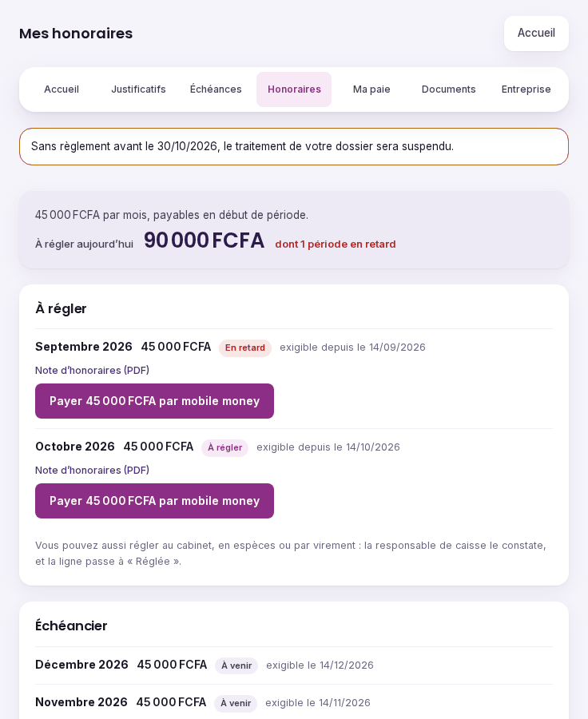
Mes honoraires.
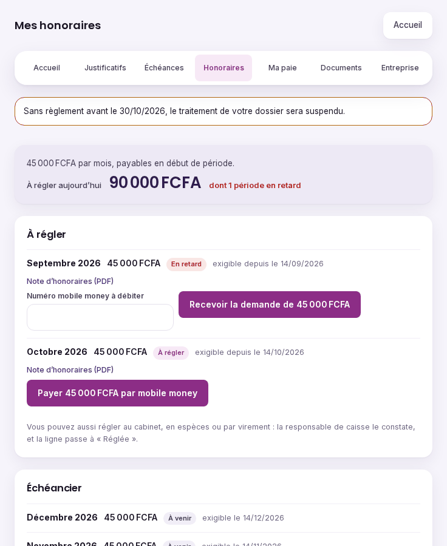
Le paiement mobile money. Le numéro à débiter, puis la demande.
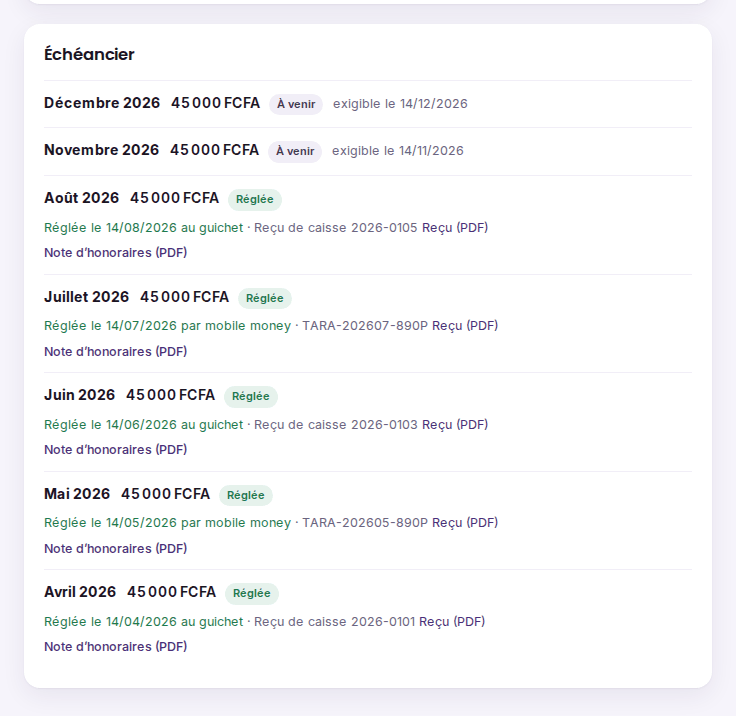
L'échéancier. Les périodes à venir, puis les périodes réglées, avec le mode (guichet ou mobile money), la référence et le reçu en PDF.
Démonstration. Sur la plateforme de démonstration, la demande mobile money ne débite rien : un message l'indique, faute d'identifiants marchands.
Et ensuite ? Une fois le règlement constaté, la période passe à Réglée, son Reçu (PDF) apparaît et vous recevez un courriel.
17
Les documents remis par le cabinet
À quoi ça sert
Retrouver les reçus de dépôt de vos déclarations, faites par le cabinet pour votre compte : TVA, acomptes, retenues sur salaires, cotisations CNPS, déclaration annuelle.
Touchez l'onglet Documents.
Chaque ligne Reçu de dépôt indique l'obligation, la période, la date de dépôt et le montant. Les plus récents sont en haut.
Mes documents.
Et ensuite ? Gardez ces reçus : ils prouvent que la déclaration a été déposée à temps. Les documents de votre création (statuts, RCCM, NIU) vous sont remis par le cabinet à la dernière étape de la formalité.
18
Sa déclaration annuelle (DSF)
À quoi ça sert
Chaque année, après la clôture de l'exercice, le cabinet établit votre déclaration statistique et fiscale et la dépose sur le portail de la DGI. Il lui faut quelques pièces que vous seul détenez : elles se versent ici.
Ouvrez Ma déclaration annuelle (DSF) depuis l'accueil (lien sous la fiche de l'entreprise) ou depuis l'onglet Entreprise.
Chaque exercice s'affiche avec son état. L'exercice le plus récent est ouvert : date de clôture, état du dépôt, accusé de la DGI s'il existe, et la liste des pièces.
Pour une pièce à fournir, versez le fichier demandé. Les pièces « établies par le cabinet ou sans objet » n'attendent rien de vous.
Cliquez sur un exercice plus ancien pour le déplier.
Ma DSF. Ici, l'exercice 2025 est déposé et la DGI a délivré son accusé de réception.
Et ensuite ? Le cabinet prépare la DSF, la fait valider, puis la dépose. Pensez aussi à compléter la fiche de votre déclaration annuelle dans l'onglet Entreprise (chapitre 20) : coordonnées, banque, signataire, codes d'activité.
19
Sa paie
À quoi ça sert
Si le cabinet tient la paie de vos salariés, l'onglet Ma paie montre, pour le mois, ce que vous devez verser et le bulletin de chaque salarié.
Touchez l'onglet Ma paie. Le mois affiché est le dernier calculé.
Ce que vous devez verser : le total, dont la part CNPS, la date limite, l'effectif déclaré, la masse salariale brute, les retenues salariales et les charges patronales.
Votre personnel : chaque salarié, son poste, son salaire ; le lien Son bulletin ouvre son bulletin de paie.
Si un encadré signale que le groupe de risque CNPS n'est pas renseigné, cliquez sur Enregistrer le groupe et indiquez celui de la notification de la CNPS.
Ma paie.
À lire attentivement. Si un encadré indique « Les taux employés n'ont pas encore été validés sur le texte », les bulletins sont calculés avec des valeurs que le cabinet doit encore confirmer : ils ne sont pas opposables en l'état. Attendez la confirmation du cabinet avant de les remettre à vos salariés.
20
Son entreprise et ses réglages
À quoi ça sert
Vérifier ce que le cabinet sait de votre entreprise, joindre votre interlocuteur, signaler un changement, compléter la fiche de votre DSF, et choisir quand être prévenu de vos échéances.
Mon entreprise
Touchez l'onglet Entreprise : forme, activité, NIU, RCCM, adresse, centre des impôts, gérant, numéro d'adhésion au CGA, puis Votre régime fiscal expliqué simplement.
Votre chargé(e) de clientèle : son nom et le bouton Écrire.
Mon entreprise.
Signaler un changement
Dans Signaler un changement, choisissez ce qui change : adresse, gérant ou dirigeant, activité, numéro de téléphone, autre changement.
Décrivez le changement en quelques mots, puis cliquez sur Signaler au cabinet.
Vous ne modifiez rien vous-même : le cabinet fait les démarches. Une nouvelle adresse peut changer votre centre des impôts, donc vos dates limites ; le cabinet vérifie.
Fiche de votre déclaration annuelle (DSF)
La DSF demande des informations que le cabinet ne connaît pas toujours. La fiche liste ce qui manque (À compléter), puis propose les champs : téléphone et courriel de l'entreprise, boîte postale, ville et adresse du siège, numéro CNPS employeur, signataire des états financiers et sa qualité, banque et numéro de compte, activités avec leur code NACAM. Renseignez-les une fois : le cabinet les relit et les reprend chaque année.
Signaler un changement.La fiche de la DSF.
Réglages : les rappels avant les échéances
Cliquez sur Réglages, en haut de l'espace.
Laissez cochée la case Me prévenir avant mes échéances, par courriel et dans mon espace, et cochez combien de jours avant (7, 3, 2 ou 1 jour).
Cliquez sur Enregistrer mes rappels.
Réglages. La section « Aide et questions » mène à votre interlocuteur.
Pas encore disponible. L'option « Recevoir aussi par WhatsApp » est affichée mais pas encore active : le compte d'envoi WhatsApp du cabinet n'est pas encore ouvert. Les rappels partent par courriel et dans votre espace.
Sur téléphone
Téléphone. Mes honoraires.Téléphone. Mes échéances.
Questions fréquentes
Dois-je créer un compte pour demander une création d'entreprise ?
Non. Le formulaire du site suffit, avec votre nom et votre téléphone. Votre compte est ouvert automatiquement par le cabinet après votre règlement.
Quelles pièces dois-je préparer ?
Une pièce d'identité pour chaque associé et pour le gérant, un justificatif de domicile du siège de moins de trois mois, trois propositions de nom, le plan de localisation ou le bail du siège, un extrait de casier judiciaire du gérant de moins de trois mois. La liste exacte de votre dossier s'affiche dans « Ma création ». Inutile de tout réunir avant de commencer.
L'estimation est-elle un engagement ?
Non. C'est une estimation indicative, gratuite et sans frais de dossier. Le prix définitif figure sur la proposition que le cabinet vous envoie après examen de votre projet.
Comment régler ?
Par mobile money, depuis la page de votre proposition ou l'onglet Honoraires : vous validez la demande sur votre téléphone. Ou au guichet du cabinet, en espèces ou par virement. Dans les deux cas, la page se met à jour quand le règlement est constaté.
J'ai perdu mon lien de suivi.
Connectez-vous à votre espace client : « Ma création » montre la même chose. Sinon, appelez le cabinet, qui vous le renvoie à votre adresse.
Je n'ai pas reçu le courriel pour choisir mon mot de passe.
Vérifiez vos courriers indésirables. Sinon, appelez votre chargé de clientèle : il vous renvoie le lien à l'adresse connue du cabinet. Le lien ne fonctionne qu'une fois ; s'il a expiré, utilisez « Mot de passe oublié ? ».
Puis-je payer mes impôts ou la CNPS depuis l'espace ?
Pas encore. Réglez au guichet de votre centre des impôts ou de la CNPS, puis envoyez la quittance dans la fiche de l'échéance. Si vous avez confié ce paiement au cabinet, remettez-lui les fonds : il paie pour vous.
Ma quittance a été refusée.
Le motif est écrit dans la fiche de l'échéance. Envoyez une nouvelle quittance lisible et complète au même endroit.
Puis-je modifier l'adresse ou le gérant de mon entreprise ?
Pas directement : utilisez « Signaler un changement » dans l'onglet Entreprise. Le cabinet fait les démarches et met la fiche à jour.
Le site marche-t-il sur téléphone ?
Oui. Le site et l'espace client s'adaptent aux écrans de téléphone. Le cabinet propose aussi une application mobile pour envoyer vos pièces, même sans réseau.
Nous joindre
WhatsApp699 902 184
Le canal le plus utilisé par nos clients.
Téléphone+237 233 42 48 47
Standard du cabinet, aux heures d'ouverture. Autres lignes : +237 699 902 184, +237 676 887 686.
Courrielcontact@cga-brcgroup.com
Pour les demandes détaillées et les pièces jointes.
Votre interlocuteurDans votre espace
Onglet Entreprise, « Votre chargé(e) de clientèle », bouton Écrire.
CGA Broad Range Consulting Group, cabinet comptable, d'audit et de conseil agréé par le ministre des Finances (arrêté n° 00000048/MINFI/DGI du 28 janvier 2020). Bureau à Douala.
Petit glossaire
CGA
Centre de gestion agréé : structure agréée par le ministre des Finances qui assiste les petites entreprises adhérentes dans leur gestion et leurs obligations fiscales.
Adhérent
Entreprise inscrite au centre de gestion agréé et suivie par le cabinet.
Proposition, proforma
Le devis chiffré que le cabinet vous envoie avant tout engagement. Vous l'acceptez en ligne.
Justificatif, pièce
Facture, relevé, reçu ou tout document qui prouve une opération de votre entreprise.
Échéance
Date limite d'une déclaration ou d'un paiement à l'administration (impôts, CNPS).
Quittance
Reçu délivré par l'administration quand vous payez un impôt ou une cotisation.
Mandat de paiement
Accord par lequel vous confiez au cabinet le paiement d'une obligation : vous lui remettez les fonds, il paie l'administration.
Honoraires
Ce que vous payez au cabinet pour ses services, selon votre contrat.
Mobile money
Paiement depuis votre compte de téléphone mobile : vous validez la demande avec votre code secret.
TVA
Taxe sur la valeur ajoutée, facturée à vos clients et reversée chaque mois.
CNPS
Caisse nationale de prévoyance sociale : elle reçoit les cotisations sociales de vos salariés.
DSF
Déclaration statistique et fiscale : la déclaration annuelle de l'entreprise, déposée à la DGI après la clôture de l'exercice.
DGI
Direction générale des impôts.
NIU
Numéro d'identifiant unique de l'entreprise auprès de l'administration fiscale.
RCCM
Registre du commerce et du crédit mobilier : l'immatriculation de votre société.
CFCE
Centre de formalités de création d'entreprises, le guichet unique où le dossier de création est déposé.
Régime fiscal
La façon dont votre entreprise est imposée (impôt libératoire, réel simplifié, réel), selon son chiffre d'affaires.
Exercice
L'année comptable de l'entreprise, le plus souvent du 1er janvier au 31 décembre.